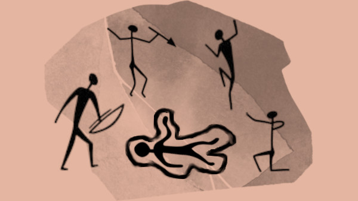

Digamos que el cerebro de un cavernícola no está muy desarrollado así que para mantener la información guardada entre sesión y sesión deberán dibujarla toda en las paredes de la cueva. Lo que no esté en el dibujo no lo recordarán de una sesión a otra y tendrán que investigarlo de nuevo
Cómo DJ dales una hoja en blanco y un lápiz donde deberán dibujar la información que vayan descubriendo. Si quieres algo más auténtico imprime una foto de unas pinturas rupestres y dales pinturas marrones y rojas para que hagan sus monigotes.
El primero que dibuje una obscenidad recibirá una mejora. Esto es así y no es discutible. La historia del arte rupestre está lleno de genitales y esta innovación artística debe ser recompensada.
Cuando tus cavernícolas despiertan, después de una noche extrañamente tranquila, Grogui no se levanta a beber agua y terminarse los restos del «reptalargo» que cazasteis ayer.
Tras darle varios golpecitos con un palo en los ojos, pueden comprobar que está muerto. Hay que saber quién o qué lo ha matado, porque está noche podría volver a atacar.
Si les da igual, a la noche siguiente morirá Brubo y la siguiente Kruka y así hasta que se queden solos en la cueva. Lo bueno de esta técnica es que se habrán quitado muchos sospechosos, lo malo es que ellos son las próximas víctimas.
Hacerle una autopsia a un cadáver es difícil si eres un cavernícola, solo tienes un trozo de obsidiana afilada y no controlas el fuego, pero se pueden hacer cosas.
De primeras, al moverlo, verán una gran herida en el pecho. Hasta un cavernícola sabe que esa es la causa de la muerte. Esto es así porque si lo hubiese envenenado o asfixiado, no podrían saberlo de ninguna manera. Cosas de no tener ciencia criminológica.
Ni que decir que tendrán que decidir cómo repartirse el equipo de Grogui, total no lo va a usar más. Haz una tirada en la tabla de equipo inicial para determinar su contenido.
Pueden buscar cosas con las que hayan podido matar a Grogui y golpear con ellas al cadáver, a otros bichos (que tendrán que cazar) o a ellos mismos (recibiendo daño) a ver si se parecen las heridas. Pueden usar porras, cuchillos de sílex y dentaduras y garras de animales que se hayan comido, etc.
Cómo comedores de carne cruda y, en casos de necesidad, antropófagos, podrían probar un trocito y sabrán que la muerte es reciente, un par de horas.
También, preguntando más tarde en el interrogatorio a la gente de la cueva, podrían saber qué estaba vivo hace unas horas porque se levantó a mear y despertó a un par de cavernícolas. Pero claro, así se han solucionado el almuerzo.
XXX
XXX
Otra opción es buscar huellas, pero huellas huellas, nada de modernidades de huellas digitales. Si hay huellas recientes que salgan de la caverna, es que el asesino entro y salió. Si no hay huellas, es que el asesino está en la cueva (tan-tan-tan todos se miran aviesamente buscando sospechosos) o volaba. Otra opción es que se haya adentrado en lo más profundo de la cueva.
XXX
XXX
Estas son posibles preguntas que tus cavernícolas pueden hacer y lo que los testigos podrán decirles.
| Pregunta | Respuesta tonta | Respuesta con posible pista |
|---|---|---|
| ¿XXX? | XXX | XXX |
| ¿XXX? | XXX | XXX |
| ¿XXX? | XXX | XXX |
| ¿XXX? | XXX | XXX |
| ¿XXX? | XXX | XXX |
| ¿XXX? | XXX | XXX |
Tus cavernícolas pueden intentar hacer un «cavernícola bueno, cavernícola malo». La verdad es la mejor forma es que el cavernícola bueno ofrezca comida y agua y el malo cachiporra.
La verdad es que esta técnica no da ninguna ventaja, pero puede ser muy divertido ver a tu mesa intentándolo.
La verdad es que poca información pueden sacar a las cosas para comer (o que te comen), pero investigar da hambre y es una buena excusa para salir a dar mamporros y quizas obtengan algunas pistas y sobretodo manduca en cantidad.
| Cosas para comer | Pistas |
|---|---|
| XXX | De uno de sus cuernos cuelga XXX |
| XXX | XXX |
| XXX | XXX |
| XXX | XXX |
| XXX | XXX |
Las escenas de acción no son muy comunes en este tipo de relatos, pero alguna persecución, una pequeña pelea o incluso un intento de asesinato contra los investigadores son bastante comunes. Así que cuando se estén acercando al responsable de la muerte de Grogui, deberíamos meter alguna escena de este tipo. Veamos algunas opciones y como solventarlas.
XXX
Según Agatha Christie, las razones para cometer un crimen son el amor, el dinero o la venganza (y en algunos casos para ocultar otro asesinato). Está teoría se aplica a tus cavernícolas, pero con una adaptación prehistórica.
XXX
XXX
Hecho bajo licencia CC BY 4.0. La fuente usada es Jello Stone. El fondo de la imagen principal es de tonytranRPG. Esta aventura fue desarrollada para la CAVE JAM!.

«Se ha pintado un crimen en las paredes» es un hack para 100 Million B.C. creado por Golden Achiever y traducido al castellano por Roque Romero que te permite convertir a tus cavernícolas en detectives que deberán resolver un crimen y detener al asesino, mientras esquivan todos los peligros que quieren comérseles.
La idea del hack es que no hay un caso definido, sino que lo van creando tus cavernícolas con sus pruebas y sus investigaciones. Este hack te da las herramientas para que vayas dándoles a tus cavernícolas pistas que les lleven al misterio que ellos quieran.
Por ejemplo, si se ponen a comparar las heridas del cadáver con las que hacen los colmillos de un «dientesgrandes» y te parece interesante, pues las heridas son de un «dientesgrandes». Piensa que esto no significa mucho, porque el asesino puede ser un «dientesgrandes» o alguien que usa sus dientes como arma.